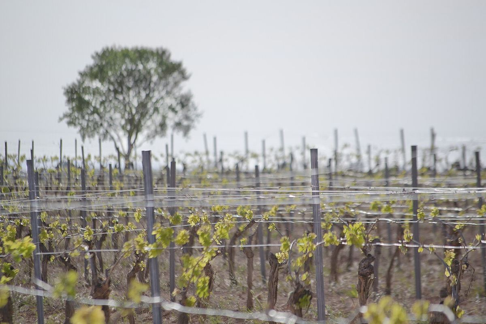

BLANCO
La Mancha, en Castilla-La Mancha, es la denominación de origen de mayor superficie de España y una de las mayores zonas vitícolas del mundo. Tradicionalmente dominada por la blanca Airén, elabora hoy también una parte creciente de tintos de Tempranillo y variedades internacionales.

La llanura manchega, tierra asociada a la novela de Cervantes, tiene una larga tradición vitícola. Durante siglos sus vinos abastecieron a Madrid y a otras ciudades del interior, y la llegada del ferrocarril en el siglo XIX facilitó su comercio. Durante gran parte del siglo XX la producción se orientó al volumen: vinos a granel y vino destinado a la destilación, elaborados en buena medida por grandes cooperativas. Las tinajas de barro, todavía visibles en muchas bodegas, son testimonio de aquella época. Desde las últimas décadas del siglo XX la reconversión del viñedo, la inversión en tecnología, el control de la temperatura en la fermentación y el aumento de las variedades tintas han transformado la producción y han dado lugar a una gama más amplia de vinos embotellados.
La denominación se extiende por una amplia meseta del centro peninsular, en las provincias de Albacete, Ciudad Real, Cuenca y Toledo, a altitudes que rondan los 500 a 700 metros. El clima es continental extremo: inviernos fríos, veranos muy calurosos y secos, lluvias escasas e irregulares, y muchas horas de sol. La sequedad del ambiente reduce la incidencia de las enfermedades de la vid, lo que favorece la viticultura ecológica. En el territorio de Castilla-La Mancha se encuentran además varios Vinos de Pago, además de otras denominaciones de origen como Valdepeñas.
Predominan los suelos pardo-rojizos, de textura arcillosa o arcillo-arenosa, sobre subsuelos calizos, en ocasiones con una costra caliza a poca profundidad. Son en general pobres en materia orgánica.
La Airén, una de las variedades blancas más plantadas del mundo, sigue siendo la uva más extendida. Bien adaptada a la sequía, da blancos jóvenes ligeros y frescos cuando se elabora a baja temperatura. Entre las tintas destaca la Tempranillo, conocida localmente como Cencibel, junto a Garnacha, Cabernet Sauvignon, Merlot, Syrah y Petit Verdot. Otras blancas autorizadas son la Macabeo, la Verdejo, la Sauvignon Blanc, la Chardonnay y la Moscatel. Se elaboran blancos, rosados y tintos jóvenes, tintos con crianza en barrica, con las menciones tradicionales de Crianza, Reserva y Gran Reserva, y espumosos.
La gran extensión del viñedo, su diversidad de suelos y la amplia gama de variedades permiten a La Mancha elaborar vinos muy distintos, desde vinos jóvenes de consumo diario hasta otros de crianza. El peso creciente de las bodegas que embotellan sus propios vinos y de la viticultura ecológica figuran entre los cambios más visibles de las últimas décadas.